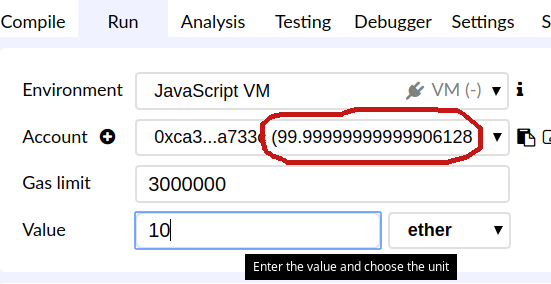
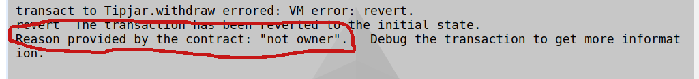

Lab 3: Tip-Jar
Create a solidity program that accepts ETH from anybody (using a fallback function), but only the creator of the contract (the owner) can withdraw it. Your submission should be the solidity program.
- Use the remix IDE, as described in the previous exercise
-
Verify that depositing to the tipjar by setting a value and clicking the (fallback) button decreases the balance of the sender:

-
Verify that an account other than the owner cannot withdraw:

- Verify that the owner can withdraw the tips.
- Optional: In your contract, have a function that allows the owner to transfer ownership to another address.